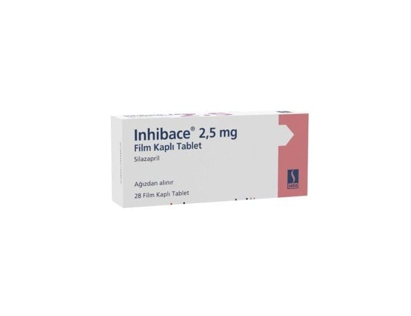

Inhibace 2.5 mg Film Kaplı Tablet, 28 Adet

Ne için kullanılır
KT · Bölüm 1ĠNHĠBACE içeriğinde 2,5 mg silazapril adı verilen bir ilaç içerir. Her bir kutuda 28 tablet bulunmaktadır. ĠNHĠBACE, kırmızımsı kahverengi renkli oval, bikonveks film kaplı tabletler halindedir ve tabletlerin bir tarafında çentik bulunmaktadır.
ĠNHĠBACE aĢağıdaki durumların tedavisinde kullanılır: Kalıtımsal kan basıncı yüksekliği (esansiyel hipertansiyon) Böbrek rahatsızlığından kaynaklanan kan basıncı yüksekliği (renal hipertansiyon) Kronik kalp yetmezliği
Kan damarlarınızı rahatlatıp geniĢleterek etki etmektedir. Bu, kan basıncınızın düĢmesine yardımcı olur. Ayrıca, kronik kalp yetmezliğiniz varsa kalbinizin vücudunuza kan pompalamasını da kolaylaĢtırır.
Doktorunuz ĠNHĠBACE dıĢında durumunuzu tedavi etmek için baĢka ilaçlar da verebilir.